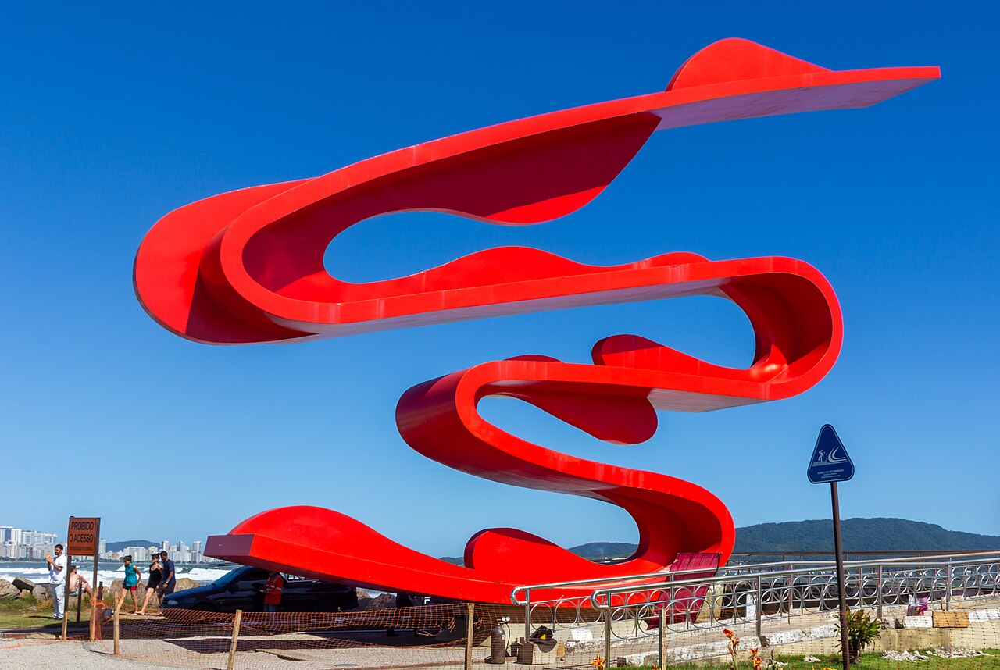
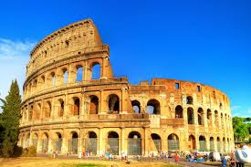
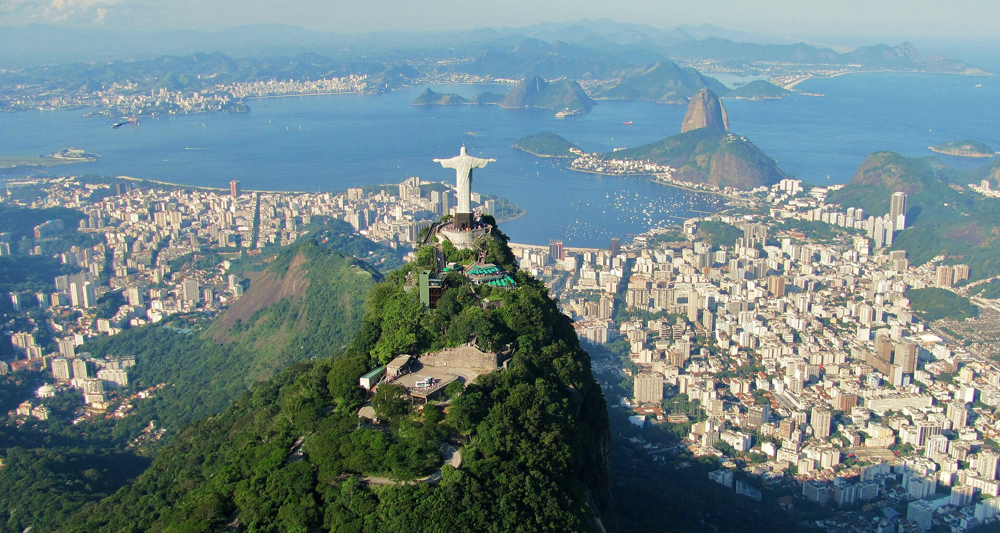
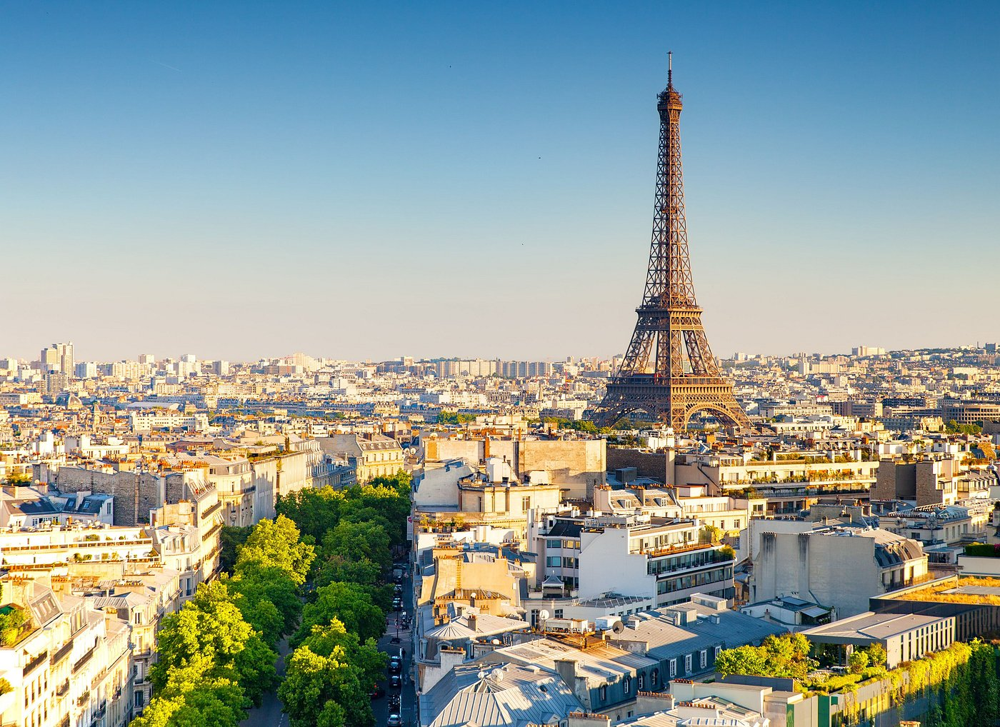

Tóquio


Tenho memórias muito boas de lá porque fui em viagem com a escola. Visitar os marcos históricos e ver a importância da cidade pro desenvolviemnto do Brasil é uma experiência notável e foi incrível experienciar isso ao lado dos meus colegas. Além disso, fomos também às praias de Santos, que são lindas, e foi muito divertido.Mais sobre santos aqui

Fiz uma longa viagem de carro com a minha família, de São Paulo, passando por Brasilia em direção à rio quente. No tempo que passamos lá, tiramos muitas fotos e entendi melhor sobre o lugares que passam na televisão quandp falam sobre política. São prédios bem bonitos, e a organização da cidade é bem satisfatória, a experiência vale a visita pelo valor histórico da cidade.Mais sobre Brasilia aqui

É a minha viagem mais recente, no fim de 2024, e talvez por isso eu ache que ela é a mais legal.
Visitei várias monumentos e marcos históricos, além de comer muita comida boa. Também vi neve, muita
neve, por ser no final do ano, e com certeza eu não tinha calçados apropiados pra tanto frio e eu
quase congelei meus pés. Mas a viagem foi muito boa, passar esse tempo com a minha família em um lugar
tão lindo e cheios de coisas novas foi uma experiencia inesquecível.
Mais sobre Roma aqui
Eu adoraria visitar Tóquio porque sou apaixonada pela cultura asiática e principalemngte japonesa,
além de ser um ponto turístico muito conhecido e aclamado. Seria legal experimentar as comidas, visitar
os grandes edifícios e ver de perto uma cultura tão diferente.
Mais sobre Tóquio aqui

Meus pais me dizem que eu já estive lá, mas foi quando minha mãe estava grávida, então queria uma vez ir, de verdade, pro tão falado Rio de Janeiro, porque acho muito característico do Brasil (apesar de ser um esteriótipo) e eu realmente gostaria de ver com meus própios olhos, ao invés de tirar conclusões pelo que os outros me dizem sobre lá.Mais sobre o Rio de Janeiro aqui.

Eu adoraria conhecer a pars, não só pelo ponto turistico tão comentado mas também pela beleza da cidade, dizem que ela é romântica e eu gostaria de entender o que faz as pessoas terem essa impressão. Eu também gostarioa de experimentar a culinária, tanto as comidas mais conhecidas como os gostos mais exóticos franceses.Mais sobre a França aqui